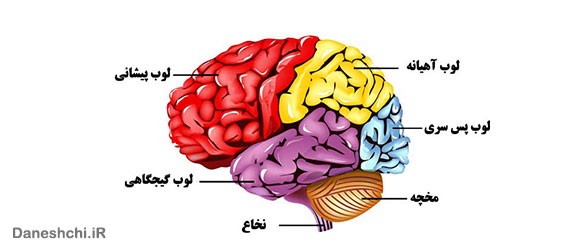
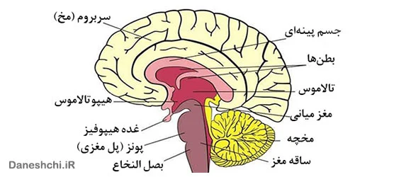

عناوینی که در این مقاله به آن ها اشاره شده:

مغز انسان مرکز دستگاه عصبی است. دستگاه عصبی مرکزی در درون حفاظی استخوانی به نام جمجمه و ستون فقرات قرار گرفته و شامل مغز و نخاع میباشد. سیستم اعصاب مرکزی در زبان عام به دو قسمت با نامهای مادهٔ سفید و مادهٔ خاکستری تقسیم میشود. مغز شامل قسمتهای متنوعی است که هر کدام در عین ارتباط تنگاتنگ با یکدیگر دارای کارها و وظائف گوناگونی هستند.
ساختار مغز انسان
مغز در داخل استخوان جمجمه و نخاع در داخل ستون فقرات جای گرفته است. سه پرده که در مجموع مننژ نامیده میشوند، مغز و نخاع را از اطراف محافظت میکنند.
پرده داخلی :
پرده داخلی چسبیده به مغز و نخاع بوده و کار تغذیه بافت عصبی را انجام میدهد.
پرده میانی :
پرده میانی عنکبوتیه نام دارد که به پرده خارجی چسبیده و از پرده داخلی کم و بیش فاصله دارد.
پرده خارجی :
از بافت پیوندی محکم تشکیل شده و به استخوانهای محافظ چسبیده است.
در فاصله بین عنکبوتیه و پرده داخلی مایع شفافی قرار گرفته است که از ترشحات رگهای خونی است. این مایع را مایع مغزی-نخاعی میگویند و کار آن محافظت از بافت عصبی است.
اجزای مغز انسان
مغز از قسمت های زیر تشکیل شده است:
- مخ
- مخچه
- بصل النخاع
- بطن های مغزی
- تالاموس و هیپوتالاموس
- مایع مغزی-نخاعی
- لُوبهای مغز
مخ بزرگترین قسمت مغز است و دارای دو نیمکره است که توسط رشتههای عصبی محکم و سفید رنگی بهم متصلند و ارتباط دو نیمکره نیز از طریق همین رشتههای عصبی صورت میگیرد. قسمت سطحی مخ ، خاکستری رنگ است و قشر مخ نامیده میشود.
قشر مخ در انسان به علت وسعت زیاد خود و جای گرفتن در فضای محدود حالت چین خورده دارد. در زیر قشر مخ ماده سفید رنگی وجو دارد که از اجتماع رشتههای عصبی میلین دار تشکیل شده است و این رشته همان دنبالههای نورون هایی هستند که در قشر خاکستری با سایر قسمتهای دستگاه عصبی قرار دارند.
علاوه بر قشر مخ چند هسته خاکستری در بخش سفید آن وجود دارد که مهمترین آنها غده تالاموس و غده هیپوتالاموس است. هر قسمت از قشر خاکستری کار ویژهای انجام میدهد. مراکز مربوط به دریافت و تفسیر اطلاعات رسیده از اندام های حسی مختلف مانند چشم و گوش و پوست در این قسمت است.
قسمتی از قشر خاکستری مرکز حرکات ارادی است. مخ مرکز احساسات ، فکر کردن و حافظه است. نیمکره چپ مخ حرکات طرف راست و نیمکره چپ بدن حرکات طرف راست بدن را کنترل میکنند. هر نیمکره کارهای ویژهای را نیز انجام میدهد.
نیمکره چپ در زبان آموزی ، یادگیری ، تفکر ریاضی و منطق ، تخصص دارد. نیمکره راست انجام دادن کارهای ظریف هنری ، موسیقی را کنترل میکند. تالاموسها مرکز تقویت پیامهای حسی مانند چشم ، درد و ترس هستند و پیامهای حسی را قبل از اینکه به قشر مخ برسند تقویت میکنند. هیپوتالاموس مرکز تنظیم اعمال مختلفی از جمله گرسنگی ، تشنگی ، خواب و بیداری و دمای بدن است.
مخچه قسمتی از مغز است که در پشت و زیر مخ قرار دارد. مخچه دارای دو نیمکره است، اما چین خوردگیهای سطحی آن کم عمق تر و منظم تر است. قسمت سطحی مخچه را ماده خاکستری پوشانده است. مخچه بوسیله دسته تارهای عصبی به بقیه قسمتهای دستگاه عصبی مربوط است. مخچه در کار کنترل فعالیتهای ماهیچهای به مخ کمک میکند.
مخچه پیام های حرکتی را قبل از اینکه به اندامها بروند تقویت میکند. در نتیجه حرکات نرمتری از بدن سر میزند. حفظ تعادل بدن نیز به عهده مخچه است. برای اینکار چشمها و گوش داخلی وضعیت بدن را به مخچه خبر میدهند و مخچه ، ماهیچهها را طوری کنترل میکند، که تعادل برقرار بماند. در مجموع کارهایی که مخچه انجام میدهد همگی غیر ارادی هستند.
بصلالنخاع پایین ترین مرکز عصبی واقع در استخوان جمجمه است. انتهای بصلالنخاع به نخاع مربوط است. بیشتر بصلالنخاع از ماده سفید و رشته اعصابی تشکیل شده است که میان نخاع و مغز قرار دارد. بصلالنخاع فعالیت اندامهای داخلی بدن مانند قلب ، ششها و اندامهای گوارشی را اداره میکند. به همین دلیل یکی از مهمترین اجزای مغز است و آسیب وارده به آن مرگ را به دنبال دارد. مغز ۱۲ جفت عصب دارد. این اعصاب با اندامهای مهمی ارتباط دارند.
در جریان تکامل مغز از لوله عصبی جنینی ، حفره مرکزی لوله عصبی در ۴ ناحیه متسع شده و بطنهای مغزی را بوجود میآورد. بطن های مغزی عبارتند از: بطنهای جانبی شامل دو بطن و هر کدام در یکی از نیمکرههای مغزی ، بطن سوم در ناحیه تالاموس و بطن چهارم در محل بصلالنخاع و پل مغزی.
تالاموس و هیپوتالاموس در فاصله بین سربروم و ساقه مغز قرار دارد. تالاموس پیامهای حسی و حرکتی را به غشای مغز میفرستد و در تنظیم هوشیاری، خواب و آگاهی نقش دارد. هیپوتالاموس، سیستم عصبی را از طریق غده هیپوفیز به سیستم غدد درونریز بدن (که هورمونها را تولید میکنند) مرتبط میسازد.
سیستم عصبی مرکزی در درون مایعی به نام مایع مغزی-نخاعی قرار گرفته که این مایع هم به عنوان ضربهگیر سیستم عصبی مرکزی را در مقابل ضربات مکانیکی حفظ میکند و هم برای فعالیتهای متابولیکی آن ضروری است. حجم این مایع که از رگ های خونی بافت مغز منشا میگیرد بین ۱۵۰ – ۸۰ میلیلیتر متغیر است. عدم باز جذب این مایع و تجمع آن در بطن های مغزی منجر به شرایطی به نام هیدروسفالی میگردد که میتواند باعث آسیب پارانشیم مغز گردد.
نیمکرهٔ چپ و راست مخ و کورتکس تا حدودی قرینه بوده که تصویری آینهای از یکدیگر میسازند. هر نیمکره به چهار لب، لوب پیشانی، لوب آهیانه، لوب پس سری، و لوب گیجگاهی تقسیم شدهاست. این تقسیمبندی لوبها از ساختار قشر کورتکس مشتق نشدهاست بلکه لوبها از نام استخوان جمجمه که آنها را همپوشانی میکند نام میگیرند.
استخوان پیشانی، استخوان آهیانه، استخوان گیجگاهی و استخوان پسسری. مرزهای بین لوبها در زیر سوتور یا بخیه که استخوانهای جمجمه را به هم پیوند داده، قرار دارد البته بهاستثنای مرز بین لوب فرونتال و لوب آهیانه که در طول مرز آناتومیک شیار مرکزی، در محل تلاقی قشر سوماتوسنسور اولیه و قشر حرکتی اولیه قرار دارد.
عملکرد مغز
هر حیوانی که به آن فکر کنید، پستاندار، پرنده، خزنده، ماهی، دوزیست، هر چیزی، بالاخره یک مغز دارد. اما مغز انسان در میان تمامی موجودات زنده به معنای واقعی، منحصر به فرد است. با این حساب، اگرچه مغز انسان، بزرگ ترین مغز در بین موجودات زنده نیست اما این واحد به انسان اجازه سخن گفتن، تصور کردن و حل مسئله را می دهد.
برای مثال، به صورت تیتر وار می توان چندین مورد که تحت کنترل مغز هستند را مثال زد:
- کنترل دمای بدن، فشار خون، ضربان قلب و تنفس را به عهده دارد.
- هر ثانیه، هجوم گسترده ای از اطلاعات را از طریق حواس پنجگانه دریافت و تحلیل می کند.
- راه رفتن، صحبت کردن، ایستادن، نشستن و تمامی حالات فیزیکی بدن انسان را کنترل می کند.
- به شما اجازه می دهد فکر کنید، رویاپردازی کنید، منطق بیاورید و احساسات را تجربه کنید.
تمامی این فرآیندها در ساختمانی پیچ در پیچ و رازآلود که یک و نیم کیلوگرم در انسان بالغ وزن دارد رخ می دهد و دنیای انسان ها بدون آن، هیچ تفاوتی با دنیای حیوانات ندارد.
مغز، نخاع و عصب های محیطی، سامانه گسترده، پیچیده و یکپارچه ای از پردازش اطلاعات را پدید آورده اند که «سیستم عصبی مرکزی» نامگذاری شده است. به طور کلی، این شبکه مسئول تنظیم تمام جنبه های خودآگاه و ناخودآگاه زندگی ماست.

ساختمان نورون
مغز شما از ۱۰۰ میلیارد سلول عصبی به نام نورون ساخته شده است؛ سلول هایی که قابلیت جمع آوری اطلاعات از محیط و تبدیل آن ها به داده های الکتروشیمیایی را دارند. می توانید آن ها را همانند ورودی ها و سیم های درون یک کامپیوتر در نظر بگیرید.
نورون ها سلول هایی تخصص یافته هستند که فعالیت اصلی شان دریافت و انتقال اطلاعات از یک ناحیه به ناحیه دیگر است. گاهی اوقات یک سلول عصبی حتی می تواند چند ده سانتی متر طول داشته باشد و مسیری طولانی را تحت تصرف داشته باشد.
این سلول ها، از سه بخش اصلی تشکیل شده اند:
بدنه سلولی یا سوما: این قسمت، تمامی آنچه که یک سلول نیاز داشته باشد را در خود جای می دهد، مثل نوکلئوس که شامل DNA است، شبکه آندوپلاسمی (برای ساخت ریبوزوم ها)، ریبوزوم ها (برای ساخت پروتئین)، میتوکندری (برای تبدیل گلوکز یا قند به انرژی). اگر این قسمت آسیب ببیند، بدون شک نورون هم از بین خواهد رفت.
این سلول ها، از سه بخش اصلی تشکیل شده اند:
بدنه سلولی یا سوما: این قسمت، تمامی آنچه که یک سلول نیاز داشته باشد را در خود جای می دهد، مثل نوکلئوس که شامل DNA است، شبکه آندوپلاسمی (برای ساخت ریبوزوم ها)، ریبوزوم ها (برای ساخت پروتئین)، میتوکندری (برای تبدیل گلوکز یا قند به انرژی). اگر این قسمت آسیب ببیند، بدون شک نورون هم از بین خواهد رفت.
آکسون: این بخش طویل و بلند، پیام را از محیط دریافت کرده و به سمت سلول و دندریت ها هدایت می کند. بسته به نوع نورون، آکسون می تواند توسط غلاف میلین پوشیده شده باشد، دقیقا همانند یک سیم فلزی که توسط پوششی پلاستیکی محافظت می شود. میلین از چربی و پروتئین ساخته شده و به نورون اجازه می دهد تا با سرعت بیشتری، پیام را به صورت پرشی در طول آکسون جا به جا کند. نورون های موجود در مغز و طناب عصبی عمدتا میلین ندارند اما اعصاب محیطی چرا.
دندریت یا پایانه عصبی: زائده های باریک و کوچکی هستند که از بدنه سلول منشعب شده و راه برقراری ارتباط نورون با دیگر سلول ها یا عوامل محیطی هستند. در حقیقت، دندریت ها همه اطلاعات را دریافت کرده و به آکسون می دهند.
بیماریهای مغزی
سر درد: انواع بسیار زیادی از سر دردها وجود دارند که بعضی از آنها میتواند خطرناک باشد، اما اغلب سر دردها مشکل جدی نیستند و معمولاً با مصرف قرصهای مسکن برطرف میشوند.
سکته مغزی (انفارکتوس مغزی): در اثر وقوع سکته مغزی، جریان خون و اکسیژن به طور ناگهانی به ناحیهای از بافت مغز مختل میشود و همین ناحیه بعداً از بین میرود. علت اغلب سکتههای مغزی، خونریزی یا تشکیل یک لخته خون در بافت مغز است.
آنوریسم مغزی: در اثر این عارضه، یک ناحیه ضعیف در دیواره یکی از سرخرگهای مغز به وجود میآید که متورم شده و به شکل بالن تبدیل میشود. پاره شدن یک آنوریسم مغزی میتواند باعث سکته مغزی شود.
خونریزی مغزی: به خونریزی در داخل یا زیر لایه پوشاننده سطح داخلی جمجمه که دورا (Dura) نام دارد، خونریزی مغزی یا هماتوم ساب دورال گفته میشود. خونریزی مغزی میتواند بر روی بافت مغز فشار وارد کند و باعث بروز اختلالات مغز و اعصاب در بیمار شود. به خونریزیهایی که در درون مغز اتفاق میافتد، خونریزی یا هموراژ داخل مغزی گفته میشود.
تکان مغز: یک نوع ضربه مغزی است که باعث به هم خوردن عملکردهای مغز به طور موقتی میشود. علت اغلب تکانهای مغز ، ضربههایی ست که در اثر مصدومیت، به سر وارد میشود.
ورم مغز: به متورم شدن بافت مغزدر پاسخ به ضربه مغزی یا به هم خوردن تعادل الکترولیتها در مغز گفته میشود.
تومور مغزی: تومورهای مغزی اعم از اینکه از نوع سرطان مغز بدخیم یا خوشخیم باشند معمولاً به دلیل فشاری که بر روی بافت طبیعی مغز وارد میکنند، باعث بروز مشکلاتی برای بیمار خواهند شد.
هیدروسفالی: به افزایش غیر طبیعی مقدار مایع مغزی نخاعی در داخل جمجمه گفته میشود. هیدروسفالی معمولاً به علت عدم گردش مناسب مایع مغزی نخاعی در مغز به وجود میآید.
مننژیت: عبارت است از التهاب لایه مننژ یا همان غشایی که اطراف مغز و نخاع را پوشانده است. مننژیت معمولاً به علت عفونت به وجود میآید.
انسفالی: به التهاب بافت مغز که معمولاً به علت یک عفونت ویروسی اتفاق میافتد، انسفالی گفته میشود.
بیماری پارکینسون: در بیماری پارکینسون اعصابی که در قسمت مرکزی مغز قرار دارند، به آرامی تخریب میشوند و مشکلاتی را در تواناییهای حرکتی و هماهنگی اندامهای بیمار به وجود میآورند. لرزش دستها یکی از اولین نشانههای شایع بیماری پارکینسون است.
صرع: به وقوع مکرر تشنج در یک فرد گفته میشود. مصدومیت از ناحیه سر و سکته مغزی میتواند از علل بروز صرع باشد، اما به طور کلی هیچ علت شناخته شدهای برای این بیماری وجود ندارد.
دمانس: کاهش عملکردهای شناختی مغز در اثر مرگ یا سوء عملکرد سلولهای عصبی مغز میتواند منجر به بروز دمانس یا زوال عقل شود.
بیماری آلزایمر: بیماری الزایمر شایعترین نوع دمانس است.
خلاصه و چکیده
مغز انسان عضوی پیچیده و شگفتانگیز است که مسئول کنترل تمام عملکردهای بدن و ذهن ما است. این عضو از سه بخش اصلی تشکیل شده است:
بخشهای اصلی مغز
- مخ: بزرگترین بخش مغز است و به دو نیمکره چپ و راست تقسیم میشود. هر نیمکره وظایف خاص خود را بر عهده دارد.
- مخچه: در پشت و زیر مخ قرار دارد و مسئول هماهنگی حرکات و تعادل بدن است.
- ساقه مغز: پل بین مغز و نخاع است و وظایف حیاتی مانند تنفس و ضربان قلب را کنترل میکند.
عملکردهای اصلی مغز
- کنترل حرکات بدن
- پردازش اطلاعات حسی
- تنظیم احساسات
- تفکر و استدلال
- حافظه و یادگیری
- زبان و گفتار
- خلاقیت و حل مسئله
بیماریهای مغزی شایع
- سردرد
- سکته مغزی
- آنوریسم مغزی
- خونریزی مغزی
- تکان مغزی
- ورم مغز
- تومور مغزی
- هیدروسفالی
- مننژیت
- انسفالیت
- بیماری پارکینسون
- صرع
- دمانس
- بیماری آلزایمر
مغز انسان هنوز به طور کامل شناخته نشده است، اما دانشمندان دائماً در حال یادگیری چیزهای جدیدی در مورد این عضو شگفتانگیز هستند.